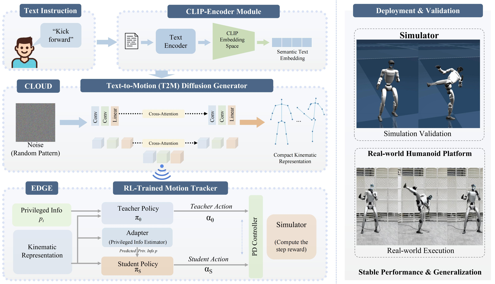

ECHO: An Edge–Cloud Framework for Language-Driven Whole-Body Control of Humanoid Robots
Abstract
We present ECHO, an edge–cloud framework for language-driven whole-body control of humanoid robots. A cloud-hosted diffusion-based text-to-motion generator synthesizes motion references from natural language instructions, while an edge-deployed reinforcement-learning tracker executes them in closed loop on the robot. The two modules are bridged by a compact, robot-native 38-dimensional motion representation that encodes joint angles, root planar velocity, root height, and a continuous 6D root orientation per frame, eliminating retargeting from human body models and remaining directly compatible with low-level PD control. The generator adopts a 1D convolutional UNet with cross-attention conditioned on CLIP-encoded text features; at inference, DDIM sampling with 10 denoising steps and classifier-free guidance produces motion sequences in approximately one second on a cloud GPU. The tracker follows a Teacher–Student paradigm: a privileged teacher policy is distilled into a lightweight student equipped with an evidential adaptation module for sim-to-real transfer, further strengthened by morphological symmetry constraints and domain randomization. An autonomous fall recovery mechanism detects falls via onboard IMU readings and retrieves recovery trajectories from a pre-built motion library. We evaluate ECHO on a retargeted HumanML3D benchmark, where it achieves state-of-the-art generation quality (FID 0.029, R-Precision Top-1 0.693) while maintaining high motion safety and trajectory consistency. Real-world experiments on a Unitree G1 humanoid demonstrate stable execution of diverse text commands with zero hardware fine-tuning. Code and models will be released.

Teaser figure description.
Motion Gallery
21 text-driven motions — Simulation (top) vs. Real Unitree G1 (bottom).
Detailed Results
Simulation (left) vs. Real-World Unitree G1 (right) — driven by the same text prompt.
"walk 5 steps"
"walk forward, then turn left"
"walk in a circle"
"a person moves ahead"
"a person is walking backward"
"he is running straight and stopped"
"a person is jogging in place"
"wave left hand"
"wave right hand"
"a person is drinking water"
"a person is playing a violin"
"a person wipes a window with their right hand in large circles"
"a person moves an object from the left side and moves it to the right side"
"a person is jumping from side to side"
"do jumping jacks"
"jumps up in a tight twirl"
"a man throwing a punch with right hand"
"fly kick"
"a man walks forward then squats"
"a person is practicing squats"
"a person swivels their right leg then their left leg"